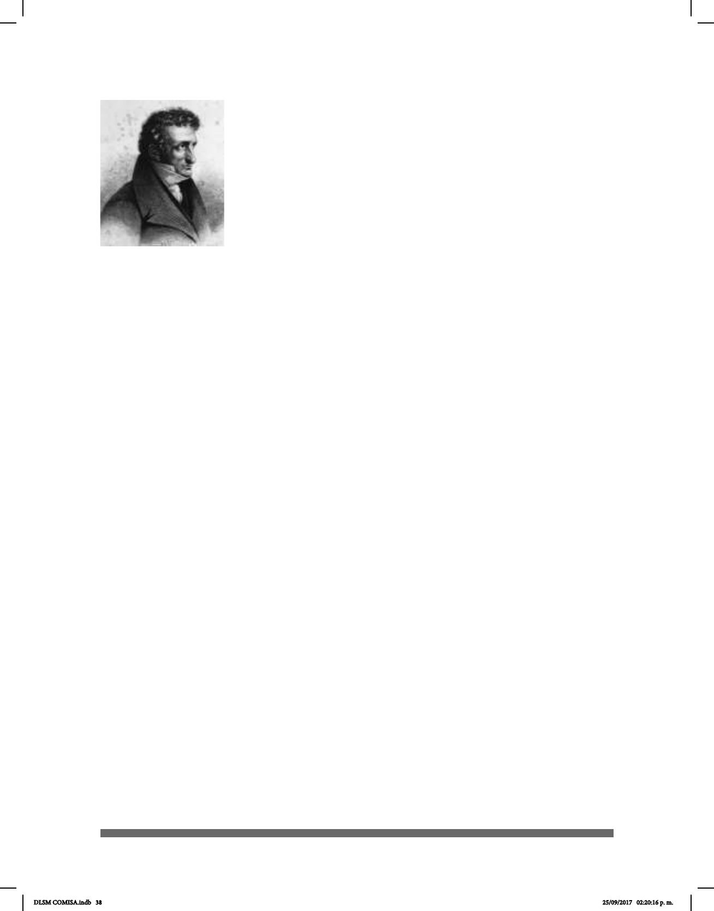

38
Entre 1807 y 1808 presentó ante la sociedad de la Facultad de
Medicina dos trabajos titulados “Sur les moyens de rendre la
parole aux sourds-muets” (sobre los métodos de devolver la
palabra a los sordomudos) y “Sur les moyens de rendre l’ouie aux
sourds-muets” (sobre los métodos de devolver la audición a los
sordomudos). A la presentación lo acompañaron seis alumnos
sordos a los que había enseñado la comprensión y producción
del habla. Su éxito fue reconocido por la sociedad.
Su método estaba basado, en primer lugar, en la
mejora de la habilidad para detectar y discriminar los
sonidos. Posteriormente, los alumnos eran adiestrados en la
discriminación de vocales y consonantes. A partir de este momento, “Itard desarrollaba
la segunda parte de su programa, el entrenamiento del habla, basado en la presentación
de distintos pares de sílabas. Los estudiantes debían transcribir estas sílabas y leerlas,
de tal forma que pudieran después enfrentarse a palabras y a frases sencillas”. (Carreño,
2011).
En la segunda mitad del siglo XIX, la educación del sordo basada en métodos
exclusivamente orales fue ganando cada vez más apoyos.
En la década del 60 se abrieron las primeras escuelas exclusivamente oralistas, mismas
que se oponían a la utilización de las señas por considerarlas inadecuadas y opuestas a
los objetivos educativos que se estaban trazando. Uno de los más ardientes defensores
de esta posición durante esos años fue Alexander Graham Bell, inventor del teléfono.
Fundó una escuela privada en Boston y fue el presidente de la Asociación Americana
para impulsar la Enseñanza del Habla a los Sordos, conocida como AG Bell. Defendió
con fuerza la necesidad de basar la educación del sordo en el lenguaje oral y se opuso
con la misma fuerza a la utilización de la Lengua de Señas en cualquier momento o
lugar, planteando para ello que se eliminara.
El Congreso de Milán, 1880
En 1880 en Milán, Italia, se llevó a cabo el Congreso Mundial de Educadores de Sordos.
En él se aprobó una resolución para promover el oralismo en la educación para sordos
en todo el mundo y despedir a todos los maestros sordos, además de prohibir el uso de
las lenguas de señas.
“George Veditz nació en la ciudad de Baltimore, en Estados Unidos, en 1861.
Sus padres eran inmigrantes alemanes. A los 8 años quedó sordo, como consecuencia
de una enfermedad. Luego de intentar sin éxito, por algunos años, ser educado
por un instructor privado, ingresó en 1875 a la Escuela para Sordos de Maryland, y
tras nalizarla, entró al Gallaudet College”, (Oviedo, 2008) donde se formó como
pedagogo. “En 1907 fue electo Presidente de la Asociación Nacional de Sordos
Jean-Marc Itard
DLSM COMISA.indb 38 25/09/2017 02:20:16 p. m.